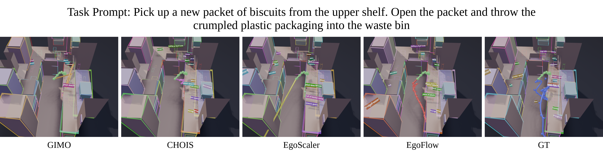

CVPR 2026
Understanding and predicting object motion from egocentric video is fundamental to embodied perception and interaction. However, generating physically consistent 6DoF trajectories remains challenging due to occlusions, fast motion, and the lack of explicit physical reasoning in existing generative models. We present EgoFlow, a flow-matching framework that synthesizes realistic and physically plausible trajectories conditioned on multimodal egocentric observations. EgoFlow employs a hybrid Mamba–Transformer–Perceiver architecture to jointly model temporal dynamics, scene geometry, and semantic intent, while a gradient-guided inference process enforces differentiable physical constraints such as collision avoidance and motion smoothness. This combination yields coherent and controllable motion generation without post-hoc filtering or additional supervision. Experiments on real-world datasets HD-EPIC, EgoExo4D, and HOT3D show that EgoFlow outperforms diffusion-based and transformer baselines in accuracy, generalization, and physical realism, reducing collision rates by up to 79%, and strong generalization to unseen scenes.

EgoFlow formulates trajectory synthesis as a continuous transport process using flow matching, learning deterministic velocity fields that map noise to realistic 6DoF trajectories. Multimodal conditioning fuses scene point clouds (PointNet++), fixture layouts (self-attention over oriented bounding boxes), trajectory history, CLIP-encoded text/category embeddings, and goal pose into a unified representation.
A hybrid Mamba–Transformer–Perceiver architecture processes this in three stages: bidirectional Mamba layers for efficient temporal encoding, Perceiver-style cross-attention for multimodal reasoning, and a final Mamba refinement stage. At inference, gradient-guided sampling refines the predicted velocity via differentiable physical costs—SDF-based collision avoidance, rotational consistency, and translational smoothness—enforcing physical plausibility without requiring constraint labels during training.
We compare EgoFlow against baselines on HD-EPIC (realistic kitchens) and HOT3D (zero-shot cross-dataset). Our method generates smoother, more physically plausible trajectories while significantly reducing collisions.
Comparison of EgoFlow against baselines on HD-EPIC kitchen sequences. Green: history, colored: predictions.

HD-EPIC Qualitative Results. EgoFlow generates plausible trajectories that take natural and smooth paths to the target pose, unlike baselines which often deviate or collide.

HOT3D Zero-Shot Results. Trained on Ego-Exo4D, tested on HOT3D without fine-tuning. EgoFlow produces geometrically coherent 6DoF trajectories in unseen environments.
Flow matching produces smoother, more coherent trajectories compared to diffusion-based generation.
HD-EPIC
| Model | ADE ↓ | FDE ↓ | Fréchet ↓ | Geodesic ↓ | Coll. ↓ |
|---|---|---|---|---|---|
| GIMO | 0.285 | 0.509 | 0.210 | 0.725 | 23.5% |
| CHOIS | 0.471 | 0.755 | 0.262 | 1.255 | 18.7% |
| Egoscaler | 1.330 | 1.494 | 0.315 | 1.614 | 35.8% |
| EgoFlow | 0.279 | 0.102 | 0.197 | 1.141 | 2.5% |
HOT3D (Zero-Shot)
| Model | ADE ↓ | FDE ↓ | GD ↓ |
|---|---|---|---|
| GIMO | 0.299 | 0.436 | 2.06 |
| CHOIS | 0.513 | 0.571 | 2.46 |
| Egoscaler | 0.351 | 0.540 | 0.856 |
| EgoFlow | 0.265 | 0.027 | 1.49 |
HD-EPIC provides only sparse object annotations. We reconstruct continuous 6DoF trajectories by tracking the manipulating hand as a rigid-body proxy using Project Aria's MPS. Below we show the reconstructed 3D object positions projected back onto egocentric frames for verification.
Pan trajectory reconstruction
Chopping board trajectory reconstruction